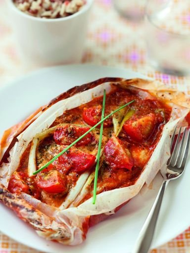

Papillote de poulet
Ingrédients
4×
- 4 c. à s. de crème fraîche
- 4 c. à c. de moutarde
- paprika
- 4 blancs de poulet
- 1 brique de pulpe de tomate
- herbes de Provence

Préparation
Étape 1
Mélanger 4 c. à s. de crème fraîche, 4 c. à c. de moutarde et du paprika.
Étape 2
Poser 4 blancs de poulet chacun sur un carré de papier alu et les napper du mélange. Entourer de 1 brique de pulpe de tomate et saupoudrer d’herbes de Provence.
Étape 3
Fermer les papillotes et cuire 30min à 170ºC.
Résumé
4 c. à s. de crème fraîche
4 c. à c. de moutarde
paprika
Mélanger
4 blancs de poulet
1 brique de pulpe de tomate
herbes de Provence
napper
cuire 170ºC